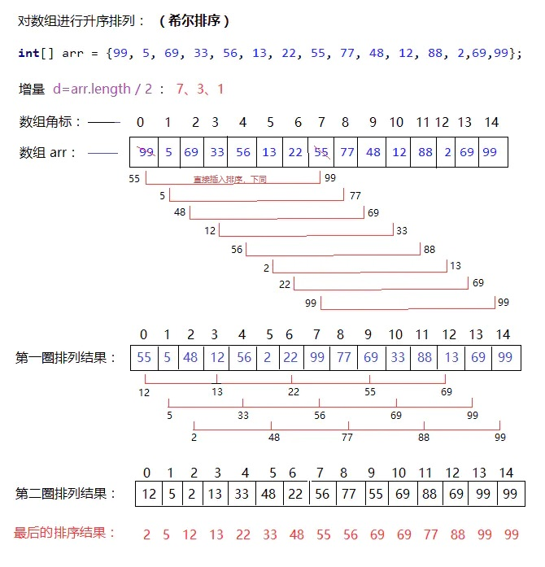
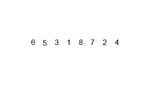

冒泡排序
算法步骤
比较相邻的元素。如果第一个比第二个大，就交换他们两个。
对每一对相邻元素作同样的工作，从开始第一对到结尾的最后一对。这步做完后，最后的元素会是最大的数。
针对所有的元素重复以上的步骤，除了最后一个。
持续每次对越来越少的元素重复上面的步骤，直到没有任何一对数字需要比较。

分析与优化
时间复杂度，在数据完全有序的时候展现最优，为O(n)；
其他情况下，n + (n-1) + … + 2 + 1 ~ O(n^2)。
空间复杂度（就是在交换元素时那个临时变量所占的内存空间）：冒泡排序的辅助变量空间仅仅是一个临时变量，并且不会随着排序规模的扩大而进行改变，所以空间复杂度为O(1)。
因此，算法在数据基本有序的情况下，性能最好。
要使算法在最佳情况下有O(n)复杂度，需要做一些改进，增加一个swap的标志，当前一轮没有进行交换时，说明数组已经有序，没有必要再进行下一轮的循环了，直接退出。
代码
def bubbleSort(arr): #基本版
for i in range(1, len(arr)):
for j in range(0, len(arr)-i):
if arr[j] > arr[j+1]:
arr[j], arr[j + 1] = arr[j + 1], arr[j]
return arr参考资料
选择排序
时空复杂度与冒泡基本一致，可以认为选择排序是冒泡排序的一种改进。
算法步骤
- 在未排序序列中找到最小（大）元素，存放到排序序列的起始位置
- 从剩余未排序元素中继续寻找最小（大）元素，然后放到已排序序列的末尾。
- 重复第二步，直到所有元素均排序完毕。

代码
test1.pydef selectionSort(arr): for i in range(len(arr) - 1): # 记录最小数的索引 minIndex = i for j in range(i + 1, len(arr)): if arr[j] < arr[minIndex]: minIndex = j # i 不是最小数时，将 i 和最小数进行交换 if i != minIndex: arr[i], arr[minIndex] = arr[minIndex], arr[i] return arr
(直接)插入排序
算法步骤
将第一待排序序列第一个元素看做一个有序序列，把第二个元素到最后一个元素当成是未排序序列。
从头到尾依次扫描未排序序列，将扫描到的每个元素插入有序序列的适当位置。（如果待插入的元素与有序序列中的某个元素相等，则将待插入元素插入到相等元素的后面。）

代码
def insertionSort(arr):
for i in range(len(arr)):
preIndex = i-1
current = arr[i]
while preIndex >= 0 and arr[preIndex] > current:
arr[preIndex+1] = arr[preIndex]
preIndex-=1
arr[preIndex+1] = current
return arr希尔排序
希尔排序是插入排序的一种算法，是对直接插入排序的一个优化，也称缩小增量排序。希尔排序是非稳定排序算法。
算法步骤


代码
ShellSort.pya = [99,5,69,33,56,13,22,55,77,48,12,88,2,69,99]#测试案例 b = len(a) #列表长度 gap = b // 2 #初始步长设置为总长度的一半 while gap >= 1: for i in range (gap,b): j = i while j>=gap and a[j-gap] > a[j]:#在每一组里面进行直接插入排序 a[j],a[j-gap] = a[j-gap],a[j] j-= gap gap=gap//2 #更新步长 print(a) #该方案中，多个组的插入排序是交替进行的（或叫同时进行）
归并排序
算法步骤


归并排序的最好、最坏和平均时间复杂度都是O(nlogn)，而空间复杂度是O(n)，比较次数介于(nlogn)/2和(nlogn)-n+1，赋值操作的次数是(2nlogn)。因此可以看出，归并排序算法比较占用内存，但却是效率高且稳定的排序算法。
代码
def mergeSort(a): #归并排序
if len(a)<=1: #如果是一个元素或者空元素
return a
mid=len(a)//2 #去中间位置
left =mergeSort(a[:mid]) #归并左列表
right=mergeSort(a[mid:]) #归并右列表
return merge(left,right) #返回
def merge(left,right): #合并两个列表
merged=[]
i,j=0,0 #i和j分别作为left和right的索引
left_len,right_len=len(left),len(right)#左右子列表的长度
while i<left_len and j<right_len: #循环归并左右子列表元素
if left[i]<=right[j]:
merged.append(left[i]) #归并左列表
i+=1
else:
merged.append(right[j]) #归并右列表
j+=1
merged.extend(left[i:]) #归并剩余左列表
merged.extend(right[j:]) #归并剩余右列表
# print(left,right,merged) #跟踪调试
return merged


发表您的看法